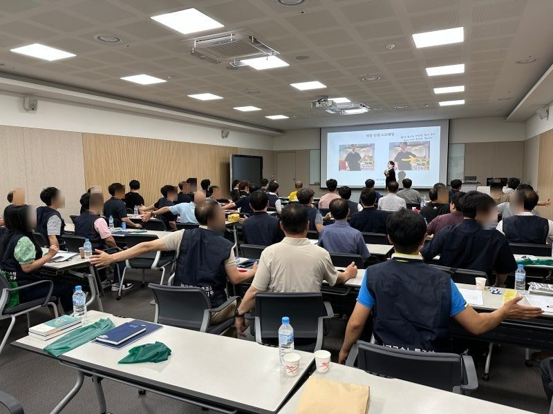
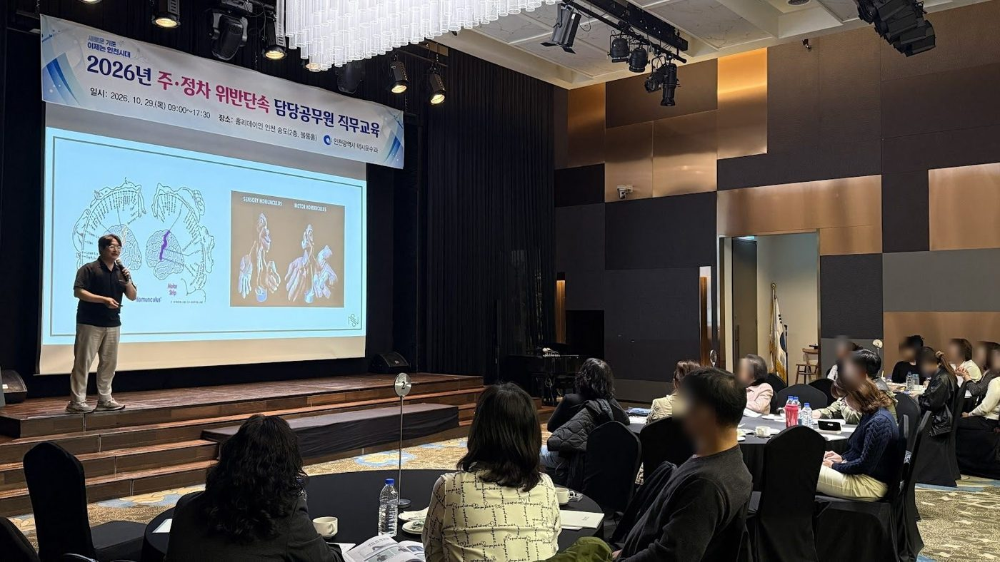
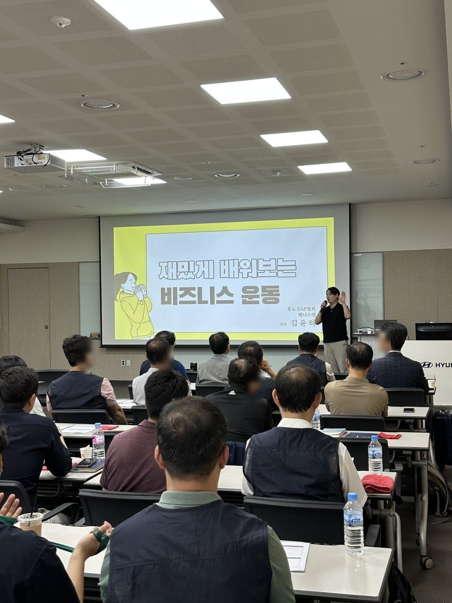

한국영상자료원스레드 글을 보고
담당자의 걱정“영화관이라 집중도가 낮을 수도 있다.”
그날의 결과직원 80명 대상 · 후기 34명 평균 4.76
“매달 했으면 좋겠다!” — 참가자
60분 교육이 끝나고, 설문지에 이런 말이 적혀 있었습니다.
물리치료사 김윤하의 근골격계 예방교육에서는 끝나고 "더 길게"라는 말이 여러 기관에서 나왔습니다. 그 회사의 일하는 자세에 맞춰 동작을 고르고, 동작마다 멈추는 기준까지 알려 드립니다.

네 곳 모두 김윤하가 올린 블로그·스레드·인스타그램 글을 보고 먼저 연락해 오셨습니다. 걱정은 달랐고, 결과는 설문이 말해 줍니다.
출처: 김윤하 네이버 블로그 「출장강의」 기록(기관별 게시글). 점수는 각 기관 교육 후 설문.
60분 흐름 예시입니다. 대상·인원·장소에 따라 순서와 비중이 바뀝니다. 인용은 여러 기관·회차 참가자 설문 원문입니다.
“쉽게 생각했던 부분을 다시 짚어보는 계기” — 공공기관 참가자
“체험하며 함께 진행하는 수업이라 좋았어요” — 한국영상자료원 참가자
“강사님이 하나하나 자세를 교정해 주셔서 유익했습니다.” — 한국기초과학지원연구원 참가자
원문 표현을 바꾸지 않고 일부 후기를 소개합니다. 아쉬운 점도 함께 실었습니다.
“직접 와서 하나하나 같이 봐주셔서 좋았다.”
한국영상자료원“아픈 곳을 콕 짚어서 질문과 해설도 굿! 완전 좋았어요!”
송파구청“현실적으로 도움이 많이되네요.”
한국천문연구원“참여형 강의라 지루하지 않고 즐거웠습니다.”
인천 노사민정“앉아서 할 수 있는 스트레칭 방법을 알 수 있어서 좋았어요”
공공기관 참가자“지인들에게 꼭 권유하고 싶다.”
한국과학기술원“실습 위주로 자세한 부위를 알 수 있어 좋았습니다”
군산교도소 직원“매달 했으면 좋겠다”
한국영상자료원“공간이 충분하지 않아 아쉽다”
한국영상자료원 · 아쉬운 점“직접 와서 하나하나 같이 봐주셔서 좋았다.”
한국영상자료원“아픈 곳을 콕 짚어서 질문과 해설도 굿! 완전 좋았어요!”
송파구청“현실적으로 도움이 많이되네요.”
한국천문연구원“참여형 강의라 지루하지 않고 즐거웠습니다.”
인천 노사민정“앉아서 할 수 있는 스트레칭 방법을 알 수 있어서 좋았어요”
공공기관 참가자“지인들에게 꼭 권유하고 싶다.”
한국과학기술원“실습 위주로 자세한 부위를 알 수 있어 좋았습니다”
군산교도소 직원“매달 했으면 좋겠다”
한국영상자료원“공간이 충분하지 않아 아쉽다”
한국영상자료원 · 아쉬운 점“선생님께서 너무 재밌게 설명해주셔서 귀에 쏙쏙 들어왔어요!”
서울강서등촌 지역자활센터“부서원들이 다같이 할 수 있었던 유익한 시간이었습니다.”
한국중부발전“강사님이 아주 열심히 해주셔서 또 수강하고 싶어요”
송파구청“통증에 대한 공감이 우선이라는 말씀에 위로가 많이 되었습니다.”
국민연금공단 서울남부지사“소수 인원이라 꼼꼼이 잘 봐주셔서 더 도움이 됐습니다!”
인천국제공항“최근에 운동을 못하고 있는데 가볍게 할 수 있는 운동을 배워서 좋았습니다.”
휴먼잡트러스트“친절하고 열정적이셔서 시간이 아깝지 않았습니다.”
국민연금공단 의정부지사“너무 힘들어요 ㅋㅋ”
공공기관 참가자“강의 자료가 있으면 더욱 도움이 될 것 같습니다.”
한국사회보장정보원 · 아쉬운 점“선생님께서 너무 재밌게 설명해주셔서 귀에 쏙쏙 들어왔어요!”
서울강서등촌 지역자활센터“부서원들이 다같이 할 수 있었던 유익한 시간이었습니다.”
한국중부발전“강사님이 아주 열심히 해주셔서 또 수강하고 싶어요”
송파구청“통증에 대한 공감이 우선이라는 말씀에 위로가 많이 되었습니다.”
국민연금공단 서울남부지사“소수 인원이라 꼼꼼이 잘 봐주셔서 더 도움이 됐습니다!”
인천국제공항“최근에 운동을 못하고 있는데 가볍게 할 수 있는 운동을 배워서 좋았습니다.”
휴먼잡트러스트“친절하고 열정적이셔서 시간이 아깝지 않았습니다.”
국민연금공단 의정부지사“너무 힘들어요 ㅋㅋ”
공공기관 참가자“강의 자료가 있으면 더욱 도움이 될 것 같습니다.”
한국사회보장정보원 · 아쉬운 점출처: P&P Healthcare 근골격계 질환 예방 프로그램 만족도 조사 중 김윤하 강사 진행분(2024.9~2025.5). 응답자 일부는 이틀 과정에 두 번 응답했습니다.
국민연금공단 출강은 2024년 9월 도봉노원·의정부 두 지사에서 시작했습니다. 다음 5주 동안 서울·경기 아홉 곳에서 16회를 진행했고, 2025~2026년에도 이어지고 있습니다.
P&P Healthcare 출강사업부 강사로 진행 · 출처: 출강 일정표, 지사별 교육 후 설문

세게, 많이 하는 것보다 '어디까지'가 먼저입니다. 강의에서 다루는 동작에는 계속해도 되는 신호, 범위를 줄일 신호, 멈출 신호가 함께 있습니다.
3M 임직원 대상 근골격계 관리 특강, 50분씩 두 차례. 강의 전에 회사의 제품과 슬로건부터 공부했습니다.

의자에 앉아서 시작하는 동작 위주라 운동 경험과 관계없이 참여할 수 있습니다.
움직임을 고르는 기준과 멈추는 기준 → 대상 직무에 맞춘 부위 실습 → 나에게 맞는 3동작 고르기
기준 이해 → 호흡과 몸통 깨우기 → 목·어깨 → 팔·손 → 발·다리·균형 → 나에게 맞는 3동작 고르기
90분 구성에 대상에게 필요한 부위나 주제를 더 깊게 다룹니다.
강의만으로는 내 몸 이야기를 다 못 하는 분들이 있습니다. 강의 전후나 별도 일정으로, 한 분씩 30분 단위로 예약을 받습니다. 단독으로도, 단체 강의와 묶어서도 진행할 수 있습니다.
불편한 곳을 듣고, 움직임을 함께 보고, 손으로 풀어 드립니다.
진단·치료가 아닌 임직원 건강관리 케어입니다. 통증이 심하거나 저림이 계속되면 진료를 먼저 안내합니다.
평소 먹는 약과 영양제를 가져오시면 한 분씩 확인합니다.
처방·판매를 하지 않습니다. 한국어·일본어로 상담할 수 있습니다.
허리·어깨가 아픈 직원들은 파스와 진통제도 같이 씁니다. 그래서 물리치료사의 강의·케어 옆에, 평소 먹는 약을 약사에게 1:1로 직접 물어볼 수 있는 자리를 엽니다.
물리치료사 단체 강의(60·90·120분) 전후로, 같은 공간에 약사 건강 상담 자리를 엽니다.
평소 먹는 약과 영양제를 그대로 가져오시면, 약사가 한 분씩 확인합니다.
강의 없이 상담만. 한쪽은 몸 케어, 한쪽은 약·영양제 상담으로 예약을 받습니다.
하루나 약사가 약·영양제 상담을 일본어로 진행합니다.
직무별 안내 자료와 셀프 무브먼트 영상(56개 보유) 중에서, 교육 대상에 맞춰 드릴 범위를 담당자님과 협의합니다.
2025년, 우즈베키스탄 대통령 직속 사회보호청의 초청으로 현지 국가 재활 시스템 구축에 참여했습니다. 재활 교육과 치료 프로토콜, 현장 운영 방식을 만들고, 사회보호청 제1부청장에게 직접 브리핑했습니다. 현지 재활 치료사들에게는 손으로 직접 시범을 보이며 가르쳤습니다.
나라 단위의 재활 현장이든, 회사의 강의장이든
현장을 먼저 보고 거기에 맞추는 방식은 같습니다.
임상에서 얻은 경험을 현장의 언어로 바꾸고, 듣는 사람이 실제로 쓸 수 있는 지식으로 전달합니다.
이 교육은 임직원 건강 특강이며, 법정 안전보건교육을 대신한다고 안내하지 않습니다. 인정 여부는 기관 담당 부서 기준으로 확인해 주세요.
대상·인원·장소·시간을 확인한 뒤 견적을 드립니다.
사무·재택, 운전·이동, 손을 많이 쓰는 일, 서서 일하는 일 등 대상 직무에 맞춰 구성합니다.
강당·회의실 등에서 진행하며 스크린과 음향이 필요합니다. 의자에 앉아서 시작하는 동작 위주라 참가자 준비물은 따로 없습니다.
규모에 맞춰 진행합니다. 인원이 많은 행사는 협업사 P&P WORK와 함께 진행합니다.
교육은 진단·치료를 대신하지 않습니다. 새로 생긴 저림·힘 빠짐처럼 진료가 먼저인 신호를 함께 안내합니다.
기관명·대상·인원·희망 일정·장소를 남겨 주시면 맞는 구성과 견적을 안내해 드립니다.
출강 일정·견적 문의